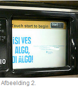
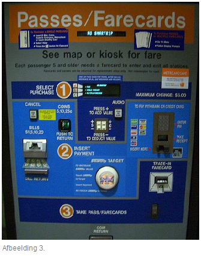

In afbeelding 1 is de machine te zien, waar mensen in New York hun metrokaartje kunnen kopen.
Allereerst is zijn er erg veel naambordjes op deze machine. Daarnaast neemt het
gedeelte voor het inwerpen van geld veel ruimte in op de machine, waardoor het lijkt alsof
je daarmee moet beginnen. Ook zorgt dit dat het touch-screen ernaast in het niet valt. Juist op dit scherm moet de gebruiker beginnen.
Ook het design op het scherm is niet helemaal gebruiksvriendelijk. Vooral omdat
de gebruiker hier, om te kunnen beginnen, op start moet drukken. Overigens staat de
knop ‘start’ klein, rechts, boven in de hoek. Niet erg opvallend. Voor de rest is er reclame
te zien op het scherm. Dit is te zien in afbeelding 2.

Wanneer de gebruiker op start heeft gedrukt, krijgt hij de keuze in welke taal hij begeleid
wil worden bij de aankoop van zijn kaartje. Daarna moet hij kiezen wat voor soort kaartje
hij wil kopen. Hij heeft drie keuzes: ‘Buy 5 rides’, ‘MetroCard’ en ‘SingleRide’.
Overigens kan alleen op deze drie keuzes geklikt worden. Nergens staat een knop naar extra
informatie over wat deze keuzes inhouden en hoe veel het gaat kosten. Dit is niet erg gebruiksvriendelijk.
Na het kiezen van een ‘SingleRide’ kaartje is het voor de gebruiker gelukkig niet meer erg
moeilijk. Hij moet een betaalmiddel kiezen en kan daarna betalen. Na een korte klik op het
touch-screen verschijnt zijn kaartje ergens onder uit de machine, waarboven ‘SingleRide’ staat.
Als laatste wordt er nog gevraagd of de gebruiker een bon wil, die dan in het vakje
‘Change & Receipt’ terecht komt.
In afbeelding 3 is te zien waar mensen in Washington DC hun metrokaartje kunnen kopen.
De machine lijkt overzichtelijk. Het ziet er naar uit dat de gebruiker 3 stappen
moet nemen voordat hij een metrokaartje heeft.

De gebruiker begint bij stap 1 en kiest welk soort kaartje hij wil kopen.
Hij kan op ‘A’, ‘B’ of ‘C’ drukken. ‘A’, ‘B’ en ‘C’ staan voor verschillende kaartjes.
Daarna denkt de gebruiker naar stap twee te moeten, maar hier moet al betaald worden.
Eerst wil de gebruiker zijn kaartje nog aanpassen! Ook dit moet nog gebeuren bij stap 1.
Op het apparaat is het stuk om de waarde van je kaartje aan te passen uitgebreid in het
gebied van stap 2. Dit had overzichtelijker gekund, door kortere stappen te nemen op de machine.
Stap twee was dan geweest dat je de waarde van het kaartje kon verhogen en verlagen.
Bij stap 2 op de daadwerkelijke machine moet geld worden ingeworpen. Het hele gebied van
stap 2 is overigens erg onoverzichtelijk. De uitleg van stap 2 staat in het midden ergens onderaan,
de benodigdheden om cash in te werpen staan links in het gebied van stap 2 en om met een pas
te betalen moet je rechts in het gebied zijn. Het was veel overzichtelijker geweest
als de gebruiker bij stap 2 kan beginnen, dus dat deze ergens links bovenaan zou staan. Dan
kan hij kan eerst beginnen met de uitleg, daarna kiezen of hij met cash geld of met een pas wil
betalen en dan naar het bestemde gebied daarvoor gaan.
Als er betaald is kan de gebruiker naar stap 3 gaan. Bij deze stap neemt de gebruiker zijn
kaartje uit de machine. Het stuk waar hij zijn kaartje uit moet halen staat niet op
dezelfde hoogte als het cijfer 3. Het apparaat waar het kaartje uit komt neemt een stuk in
van het gebied van stap 2. Dat kan overzichtelijker.
Helemaal onder op de machine valt dan uiteindelijk nog het wisselgeld in een bakje.
Het was een stuk logischer geweest als dit gedeelte bij stap twee was ingevoegd. Omdat het
bakje helemaal onder op de machine zit zullen veel mensen hun wisselgeld vergeten mee te nemen.
Ikzelf zou de kaartjesmachine van de Washington DC Metro anders ingedeeld hebben.
Hieronder is in een schets te zien hoe dat er uit zou komen te zien.